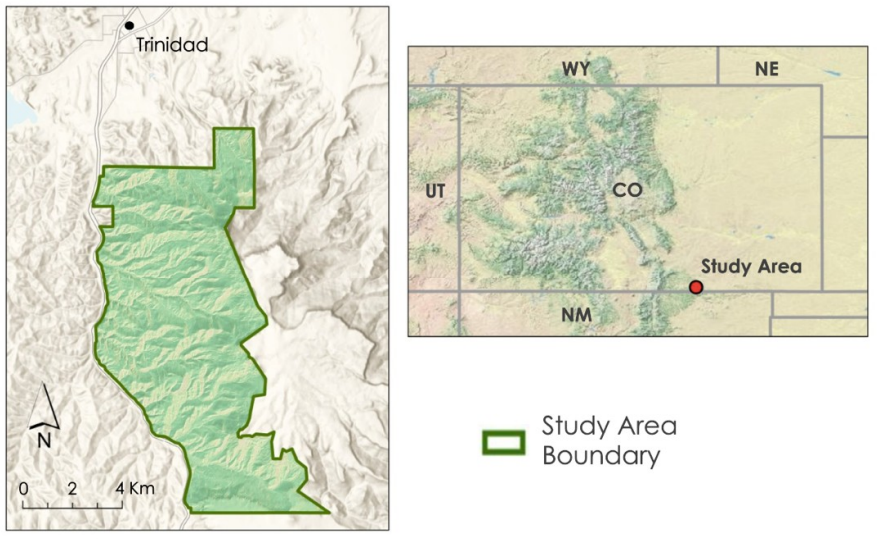

Mapping Biomass at Fisher's Peak State Park
In the Summer of 2020 I was fortunate enough to work on a project with the NASA DEVELOP program parterning with The Nature Conservancy and the Colorado State Forest Service. The project aimed to evaluate the biodiversity of the newly formed Fisher's Peak State Park outside of Trinidad, Colorado. I worked on a team of four and we used a combination of in situ data and remote sensing to estimate the above-ground biomass stored in vegetation in several areas of the park. We then developed a model to map biomass over the extent of the park, and delivered the results to our project partners to inform managment planning into the future. I was a part-time researcher with the DEVELOP program at the time, and I played a large role in developing the model and creating deliverables like maps and the techincal paper.
ABSTRACT: Fisher’s Peak is a 77.5 square km property southeast of Trinidad, Colorado that is planned to become Colorado’s newest state park. The area has experienced limited anthropogenic disturbance and is home to an abundance of unique habitats and species. A rapid, approximately 900 m change in elevation over the extent of the area nurtures a variety of plants and animals, including the endangered New Mexico meadow jumping mouse. In 2019, the State of Colorado obtained Fisher’s Peak with plans to make it Colorado’s second largest state park. A diverse group of collaborators, including the Colorado State Forest Service and The Nature Conservancy, worked closely to design the state park to maximize recreation opportunity while conserving the property’s rich habitats and biodiversity. The Fisher’s Peak Ecological Forecasting Team utilized Light Detection and Ranging (LiDAR) surveys, in situ forest inventory data, and Earth observations from Landsat 8 Operational Land Imager (OLI), Sentinel-1 C-band Synthetic Aperture Radar (CSAR), Sentinel-2 Multispectral Instrument (MSI), Advanced Land Observing Satellite 2 (ALOS-2) Phased Array type L-band Synthetic Aperture Radar (PALSAR2) and the Shuttle Radar Topography Mission (SRTM) to quantify and map biomass over the extent of the study area. The results from modeling biomass had an out-of-bag root mean square error of 55 Mg/ha and an R^2 of 12. The resulting map indicates areas where carbon storage on the property is high, informing decisionmaking processes for future park development. While more in situ training data may improve modeling capacity for biomass in the Fisher’s Peak area, this work represents a feasible attempt to better understand biomass distribution using earth observation.